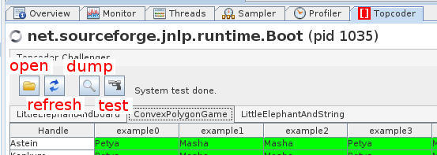

Next: Writing Contest Configuration Files
Up: TopcoderChallenger User Manual
Previous: Installation
TCC interface is consisted of four buttons: open, dump, refresh
and test. Their functions are briefly described below and further
explained in the following subsections.

- Open: load in a contest configuration file. One
cannot proceed with other actions unless a valid contest configuration
file is loaded.
- Refresh: refresh a contest configuration file. This
is used when a configuration file is updated.
- Dump: make a heap dump of the current JVM
opened in VisualVM. Then the heap dump is analyzed to find
source code opened in a challenge window. For each found source code,
it will be saved in the contest configuration file's directory.
- Test: run system test against dumped codes. System
test results will be displayed immediately below the buttons.
Tip text next to the buttons would be helpful finding what is going
on.
Subsections
2013-11-27